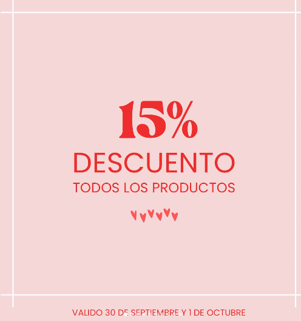
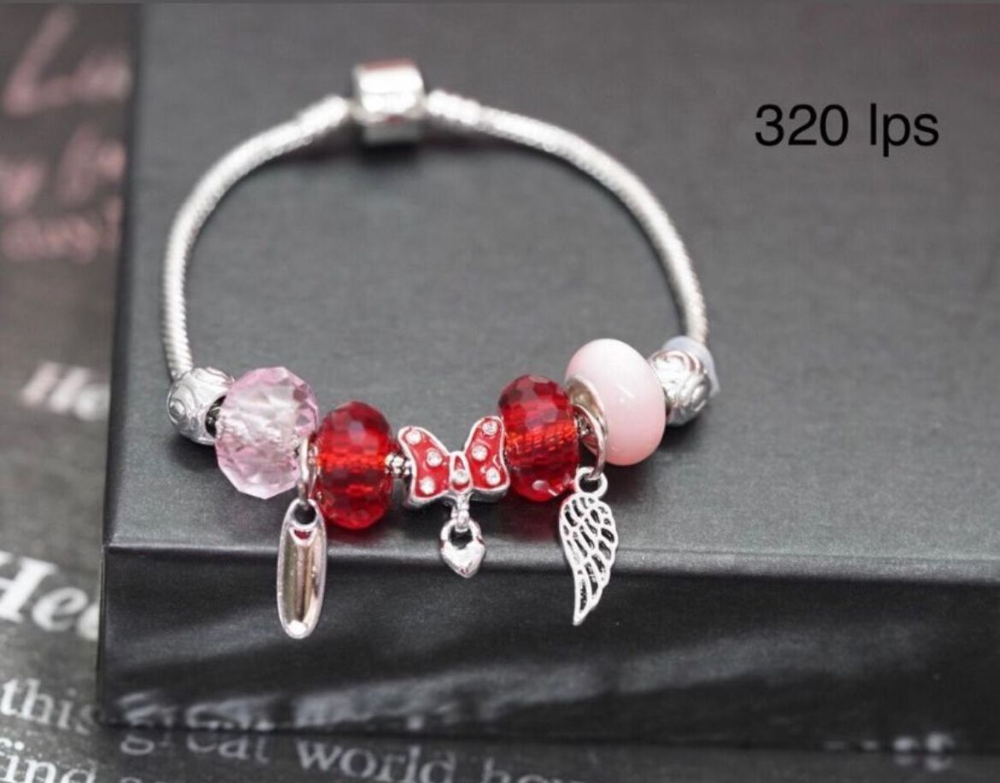
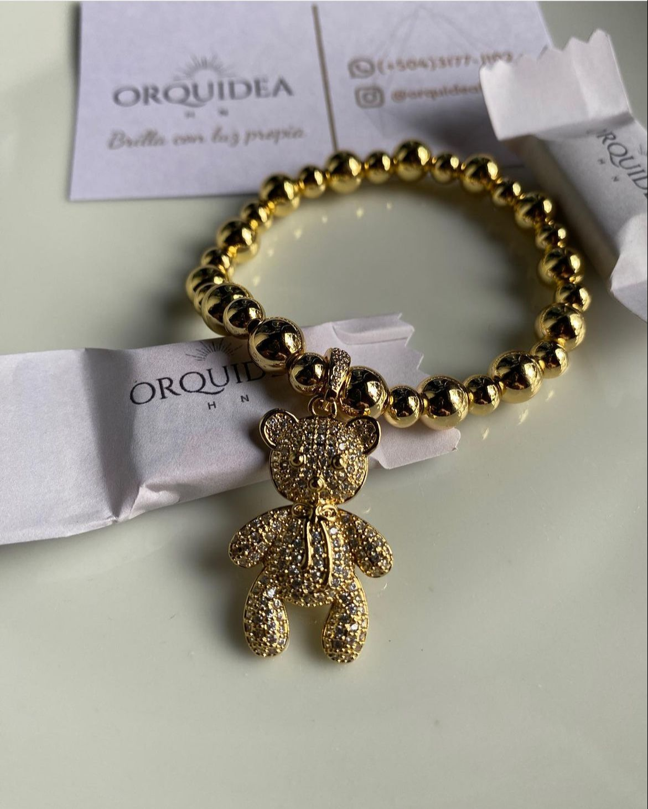
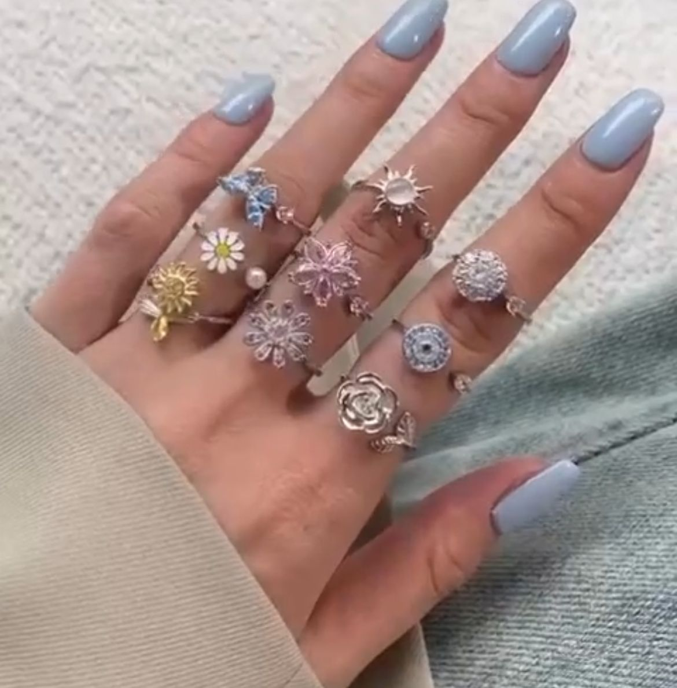
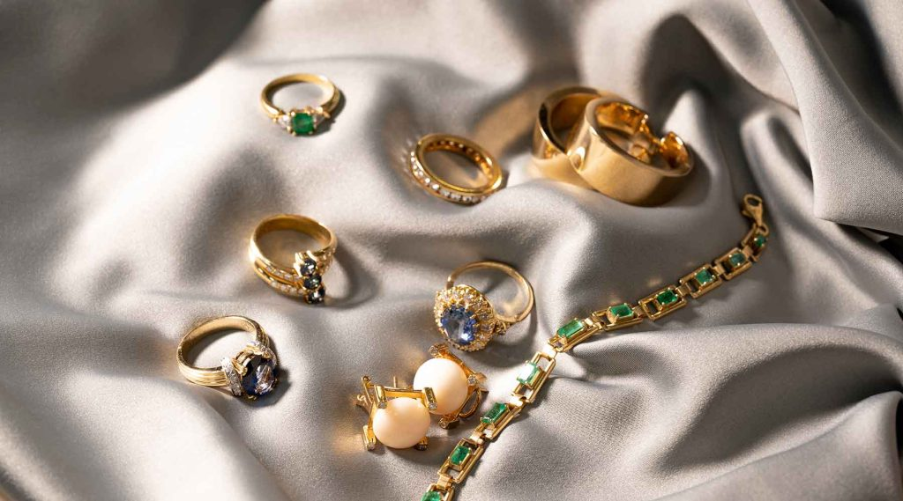

Orquidea HN| Joyeria|Perfumeria.
Emprendedor
Tienda online
SRC-DNC 📍
Más que un accesorio es tú personalidad al lucirla 💍
📩 yeyamadrid20@gmail.com
Deliveries throughout Honduras 🇭🇳
Orquídea nace en el mundo de la joya el 13 de diciembre del año 2020 con el propósito de apoyar, vender y fortalecer nuevas oportunidades para aquellas personas que desean emprender, ser dueños de negocios, revendedores y demás personas que cuenten con una gran pasión por las joyas o por si nada mas quieren tener una de nuestras joyas.
Así también tenemos la tarea de hablar con ellos por si les interesa nuestro negocio y poderlo ayudar a que le sea mas aficiente.
A lo largo de nuestra trayectoria hemos logrado crear técnicas y estrategias que han revolucionado el mercado de la joyería actual, ya que contamos con una línea de productos extraidos de España que permiten la aceptación total en el mercado.
Desde nuestros inicios hasta la fecha, seguimos en el mercado, ya que nos enfocamos en crear una experiencia personalidad a cada uno de nuestros clientes, en base a sus necesidades y preferencias, creando de esta forma un flujo de atención en excelencia.
MISIÓN
Generar oportunidades de emprendimiento a nivel nacional con modelos de negocio innovadores que enriquezcan y contribuyan a un desarrollo sustentable y socialmente responsable con diversas opciones para cada uno.
VISIÓN
Ser una organización eficaz y dinámica que pueda ofrecer una variada cartera de productos de alta calidad que se anticipen, superen las expectativas y necesidades de nuestros clientes, logrando un mayor alcance a nivel nacional.

VALORES DE LA MICROEMPRESA
- Personas: Una empresa son sus personas, estamos comprometidos y dedicados a dar a nuestro personal la mayor cantidad de oportunidades para alcanzar su potencial al máximo.
- Lealtad: Estamos comprometidos con el corazón y la razón a cada uno de nuestros clientes y proveedores.
- Integración: Trabajar de forma ética en base a nuestro negocio, todo lo que hacemos esta guiado por una línea moral que garantiza, el respeto, equidad y transparencia total.
- Calidad: Nos enfocamos en buscar la excelencia tanto en atención y calidad de producto, nuestro cliente merece lo mejor.
Somos una empresa que genera oportunidades de emprendimiento a nivel nacional, con una amplia gama de productos de alta calidad, comprometidos con nuestros clientes y empleados a proporcionar las mejores oportunidades en desarrollo, atención y calidad.
JOYAS

Aretes en forma de caracol de acero inoxidable buen tamaño y peso!
Puedes combinar con tu ropa favorita y te aseguro que te van hacer brillar
✨
Par de aretes de acero inoxidable super hermosos para conbinar.

Pulsera tipo pandora de acero inoxidable, en acero inoxidable, incluyen todos sus charms (Dijes)
Perfectos para regalitos de navidad 🌲
Compra uno por Lps.450 y llévate la segunda a Lps.275
🛍 PRECIO MAYOREO ESPECIAL

Pulsera de osito de acero inoxidable bañada en oro.

Tambien tenemos estos hermosos anillos anti estres perfectos para los que sufrimos de ansiedad.
Cada rosa o perlita da vuelta si tu lo mueves, se pretende modificar los malos hábitos, calmarnos y ayudar a que nos relajemos manteniendo los dedos ocupados.
Anillo ajustable 🐍con baño de oro acero inoxidable ✨✨
símbolo de sabiduría y renovación, por lo que esta joya podría utilizarse como un símbolo de estos valores.✨
PERFUMES


Fragancias de perfumería conocidas y exquisitas, tienen muy buena duración en la piel y excelente presentación. Ideal para tu emprendimiento.
Fragancia
Una mezcla atemporal y femenina de bayas oscuras, jazmín de medianoche y ámbar rico.
Sobre este artículo
- Perfume splash con natural hidratado para mujer
- PARTIDO GARANTIZADO LADY OLOR
- Manténgase hasta 18 horas en su cuerpo
- Olor fuerte

Sobre este artículo
- Perfume splash con natural hidratado para mujer
- Manténgase hasta 18 horas en su cuerpo
- spray natural
- 8.5 fl oz
- 8.45 onzas líquidas
Descripcion
Una fragancia floral-afrutada para la mujer que abraza su glamour femenino. Úsala durante el día cuando quieras sentirte maravillosa o por la noche para enviar tu sensualidad a nuevos niveles de impresionante. La simplicidad rige el día con respecto a la pirámide del perfume. La nota superior son las bayas chinas. La nota de corazón es flor de melocotón. La nota de fondo es sándalo.
Este increíble chapoteo corporal de amigo es uno de los aromas más distintivos, la fórmula ha diseñado para dar un aroma aromático refrescante, también es un humectante natural para el cuerpo. Utiliza este maravilloso chapoteo en el cuerpo no solo significa buen olor, sino también una piel suave; contiene ingredientes naturales que hidrata y suaviza la piel, por lo que obtendrás una piel suave y frescura.

Sobre este artículo
- Este producto es de sujeción firme y acabado natural
- Se recomienda para uso diario; por favor, guárdalo en un lugar fresco y seco
- Bruma corporal de 8 onzas
- Producto 100% de calidad
Descripcion
Descubre una fragancia afrutada con flores rosadas. Este increíble chapoteo corporal de amigo es uno de los aromas más distintivos, la fórmula ha diseñado para dar un aroma aromático refrescante, también un humectante natural para el cuerpo.
Utiliza este maravilloso chapoteo en el cuerpo no solo significa buen olor, sino también piel suave; contiene ingredientes naturales que hidrata y suaviza la piel, por lo que obtendrás una piel suave y frescura.

Sobre este artículo
- Fragancia. Una mezcla atemporal y femenina de bayas oscuras, jazmín de medianoche y ámbar rico.
- Evoca la confianza natural y la belleza brillante desde el principio de tu día hasta la noche. Ya sea que salpique abundantemente o rocíe suavemente, te enamorarás en la primera niebla.
- Nuestra botella cuidadosamente y bomba elaborada y sofisticada ofrece una gran cobertura mientras el acondicionamiento de niebla de aloe nutre la piel para la más ligera y refrescante senda hacia la fragancia.
Descripcion
Evoca la confianza natural y la belleza brillante desde el principio de tu día hasta la noche. Ya sea que salpique abundantemente o rocíe suavemente, te enamorarás en la primera niebla. Nuestra botella cuidadosamente y bomba elaborada y sofisticada ofrece una gran cobertura mientras el acondicionamiento de niebla de aloe nutre la piel para la más ligera y refrescante senda hacia la fragancia.

Las mujeres siempre resaltamos por nuestra originalidad. Los aretes, cadenas y anillos se distinguen por sus diseños fuera de lo común, colores llamativos y elegancia para cualquier momento del día.
Aunque nos mantengamos ocupadas entre el trabajo y los estudios, las mujeres nunca dejamos de vernos bien y deslumbrar gracias a nuestros accesorios. Lo cierto es que hoy en día lo diferente es tendencia.
En nuestra microempresa siempre pensamos en lo mejor para nuestro público. Por eso, tenemos preparado para ti una variedad de aretes llamativos traidos con cariño para que cautives todas las miradas.
CONSEJOS PARA CUIDAR TUS PIEZAS
- Evita el contacto con agentes oxidantes como perfumes, jabon o cremas directamente a las piezas.
2. Evita el roce con otros objetos que puedan dañarlas como monedas llaves y similares
3. Conservalas seguras en su empaque original para mantener su brillo y color.
NOTA: TODAS NUESTRAS PIEZAS SON ELABORADAS EN ACERO INOXIDABLE Y BAÑO DE ORO.

¿Qué joyas puedo comprar en Orquideas HN?
En nuestra tienda online disponemos de la más variada colección de joyas y cadenas, pendientes, anillos, collares y gargantillas, pulseras… Tenemos una gran selección de joyas de oro de 5 quilates, diamantes y plata de primera ley en joyas de mujer, joyas de hombre y joyas de niño.
Descubre las colecciones especiales de joyas para bautizo y joyas para primera comunión, con pulseras esclavas, sellos, medallas y conjuntos de comunión; joyas para bodas, con alianzas, anillos de compromiso y joyas de novia, además de otras joyas para más ocasiones señaladas, como cumpleaños, Día de la Madre o Día del Padre.

Calidad certificada
Todas nuestras piezas van acompañadas
de un certificado de calidad.
En nuestra tienda en linea y mayorista queremos que todos nuestros clientes se sientan satisfechos con cada producto que les hacemos llegar ya que nuestro objetivo como microempresa es atraer al cliente y escuchar lo que quieren asi que nosotros tenemos gran variedad de cadenas, pulseras, aretes, anillos, perfumes etc para que ellos puedan darse el gusto de escoger el que prefieran.
“No fue facil comenzar con este negocio pero gracias a nuestros clientes y a Dios vamos creciendo poco a poco. Ser emprendedor es para valientes!”
Nuestra mayor comunicacion que tenemos con los clientes es por medio de nuestro instagran que se los dejamos en el link de arriba.